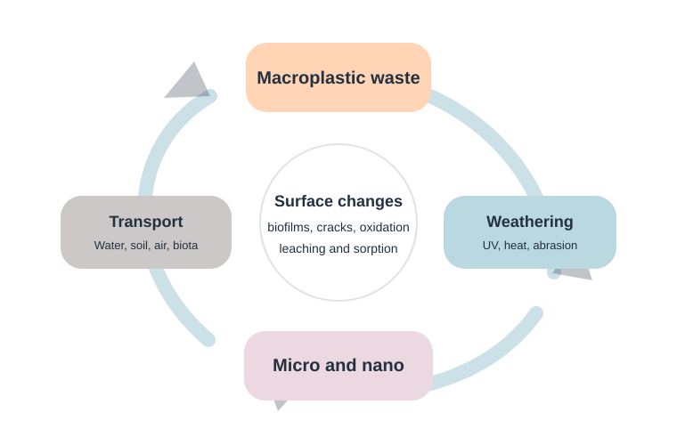

Photo-oxidation
Sunlight and oxygen can weaken polymer chains, create cracks and change surface chemistry.
Transformation changes size, surface chemistry, density, colour, biofilm formation, pollutant interaction and transport behaviour. This is why environmental particles may behave differently from clean laboratory particles.

These processes often happen together, especially in sunlight-exposed, turbulent and biologically active environments.
Sunlight and oxygen can weaken polymer chains, create cracks and change surface chemistry.
Abrasion by waves, sediment, handling and flow can break larger fragments into smaller particles.
Microbial colonisation can change surface properties, density and sinking or floating behaviour.
Microplastics can attach to organic matter, minerals or other suspended particles, making detection harder.
Additives may leach out, while environmental contaminants may sorb onto aged surfaces.
Further breakdown may produce particles that are much harder to detect and potentially more biologically mobile.
Aged particles can have weaker colour, rougher surfaces, biofilms, mineral coatings and altered spectra. These changes can affect microscopy, fluorescence screening, FTIR, Raman and signal-based detection.
Smaller size, increased surface area, chemical weathering and pollutant interaction can change exposure potential and biological interaction. Risk assessment therefore needs particle history, not only particle presence.